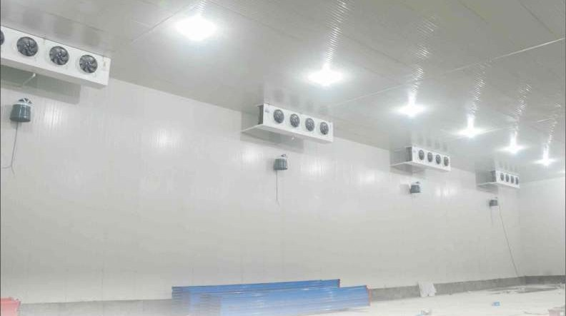
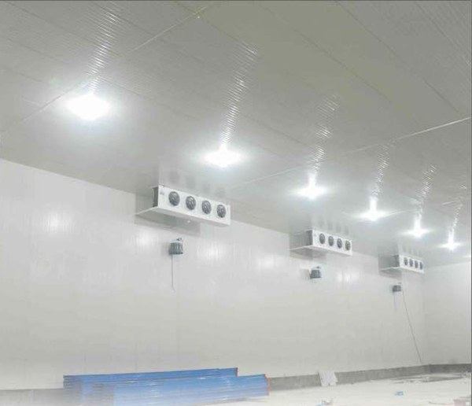
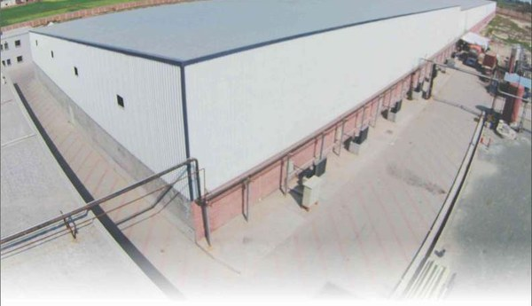

Medium-size cold stores on CDU systems.
A medium-size cold store with a CDU (condensing unit) system is the third of our three refrigeration architectures — one CDU per room, or a small multi-CDU pack where rooms share a plant deck. Below roughly 200 kW it is the economical answer, and the one that is simplest to keep running.

When a CDU is the right answer
Not every cold store needs a plant room. For single-room chillers and freezers, distribution depots, processing sites and retail-scale stores, a packaged condensing unit matched to the room is both cheaper to install and simpler to own than a rack or an ammonia plant. The engineering judgement is knowing where that line falls — for us it is around 200 kW.
One CDU per room, or a small pack
The default is one condensing unit serving one room, which gives complete independence: a fault in one room does not touch the others, and each room can be set and defrosted on its own schedule. Where several rooms sit together and the site can carry a shared plant deck, a small multi-CDU pack recovers some of the staging advantage of a rack without the cost of one.
Serviceability is the real argument
Fewer interconnections mean faster commissioning and simpler on-site service. That matters more in Pakistan than a specification sheet suggests: a CDU can be diagnosed and repaired by a competent local refrigeration technician, where a rack or an ammonia plant needs someone trained on that plant. For an operator two hours from a major city, the system that can be fixed on the day is worth more than a few points of efficiency.
What we specify
We specify Bitzer compressors and Zanotti packaged units at this scale — both supported in Pakistan, both with parts that can actually be obtained. Envelope, doors and controls are supplied on the same scope as the refrigeration.
Where it sits
Under roughly 200 kW a CDU pack is the economical answer. From 200 to 500 kW a rack system takes over, and above 500 kW ammonia or ammonia-glycol. All three sit under industrial & commercial refrigeration.

Small storage coolers and freezers
Small storage coolers are available in standard sizes as well as custom designs to fit your needs. Izhar Foster coolers and freezers are available with or without an insulated floor — the room's location, its application and the storage duty decide whether an insulated floor is needed.
Do you need an insulated floor?
This is the question that gets guessed at most often, and getting it wrong is expensive in both directions. The honest answer depends on what sits under the slab and how cold the room runs:
- On-grade, chill duty — the ground under a slab settles near 18 °C and acts as a heat sink rather than a load. A bare concrete slab has a U-value of about 0.7 W/m²K in that condition, and for a chiller the ground coupling is often acceptable without floor insulation.
- Freezer duty — sub-zero rooms on an uninsulated slab risk frost heave in the sub-base over time, which lifts and cracks the floor. Insulation, and often under-floor heating or a ventilated void, stops being optional.
- Above grade — a room on a suspended floor has ambient air underneath it, not 18 °C soil. The boundary condition changes completely and the floor becomes a genuine load. Insulate.
We specify the slab, the drainage and the pre-installation civil interface as part of design; most clients build the slab itself with a local civil contractor working to our drawings.
Where CDU cold rooms are used
The applications at this scale are broader than most people assume — restaurants, grocery stores, small food warehouses, butcher shops, floral markets, ice production, frozen food storage, general perishable goods, morgues and mortuary units, production and processing units, environmental control units, blast freezers, testing laboratories, chemical storage, and biological clean rooms.
Several of those are not food at all. A testing laboratory or a biological clean room needs the same insulated envelope and stable temperature control as a chill room, with tighter tolerance and documentation — see pharmaceutical cold storage where validation is required.
Refrigerant charge limits at this scale
Small and medium systems are where refrigerant charge limits actually bite. A2L refrigerants are now the practical replacement for high-GWP HFCs, and IEC 60335-2-89:2019 sets how much charge is permitted for a given room area — which means the room can constrain the refrigerant choice rather than the other way round. It is worth checking before a system is selected, not after.
Our A2L room-area calculator implements that standard directly, and the charge estimator uses NIST REFPROP saturated-liquid densities. Both free.
Run the numbers before you brief us
The heat-load calculator runs the ASHRAE Chapter 24 five-component method with 12 Pakistani cities and 22 application presets, so you can size a room properly before anyone quotes it. No email required.

Questions buyers ask.
The technical and commercial questions we hear most often before a contract is signed.
01When is a CDU better than a rack system?
02One CDU per room, or a shared multi-CDU pack?
03Can a local technician service a CDU system?
04What equipment do you specify at this scale?
Want a rough cost estimate? Sales-engineer tool, ±20% band.
Sales-engineer tool that combines sizing with cost output. Editable Izhar margin line. Pakistan-tuned across 12 cities and 24 commodities — size a single room or a small multi-room store and see an indicative build cost.
Open the rough estimator →